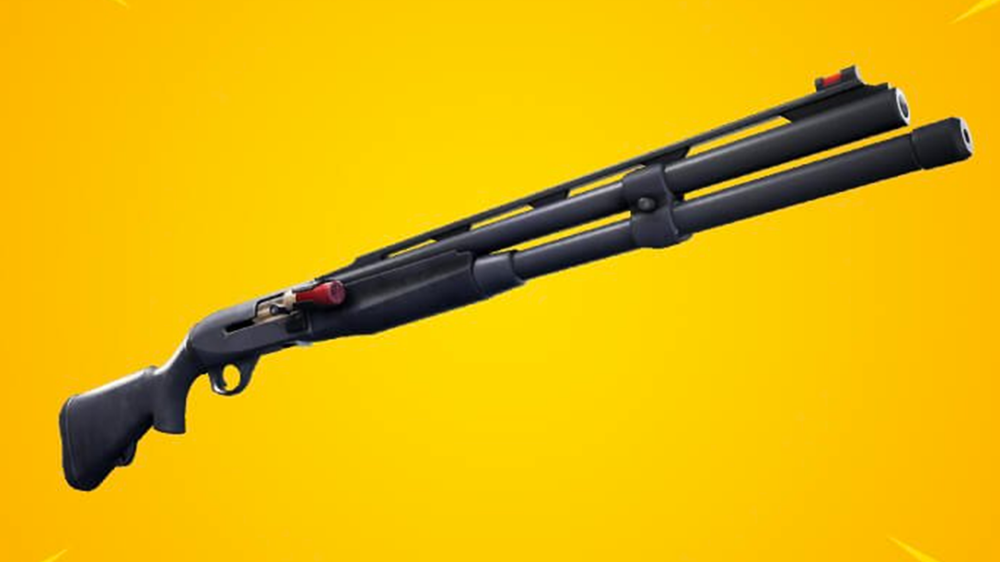

La Escopeta de Combate revolucionó la forma de jugar Fortnite cuando fue introducida. A diferencia de otras escopetas enfocadas exclusivamente en el daño a corta distancia, esta arma destacó por ofrecer una combinación única de precisión, alcance y velocidad.
Su diseño permitió a los jugadores atacar con eficacia desde distancias mayores a las habituales para una escopeta. Esto hizo posible mantener el control de los enfrentamientos sin necesidad de acercarse demasiado al enemigo.
Gracias a su excelente alcance y a su rápida velocidad de disparo, la Escopeta de Combate se convirtió rápidamente en una de las armas favoritas de jugadores competitivos y casuales. Muchos la consideran una de las armas más completas que han existido dentro del juego.
Su capacidad para adaptarse a distintas situaciones la convirtió en una opción muy versátil, capaz de destacar tanto en combates agresivos como en enfrentamientos más estratégicos.
Puede causar daño efectivo desde distancias donde otras escopetas comienzan a perder eficacia.
Su patrón de disparo permite realizar ataques más consistentes y controlados.
Funciona correctamente en distintas situaciones de combate gracias a su equilibrio general.
Fue una de las armas más utilizadas por jugadores profesionales durante su época de mayor popularidad.